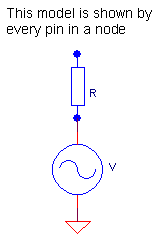
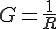
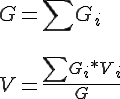
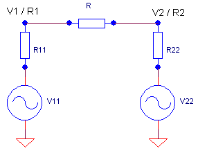
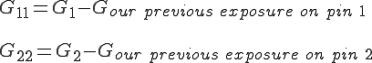
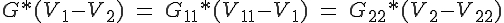
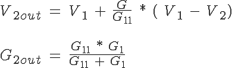
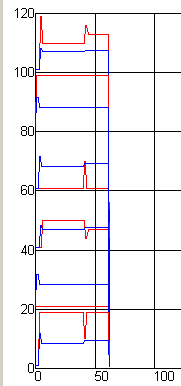

august 2007
JALsPy Analog Simulation
The analog simulation technic used here is quit uncommon. Normally you would evaluate the complete network and generate all the Kirchhoff equations, which always gives the right solution by solving this set of equations in just one stroke. The technic used here is somewhat peculiar, by starting at some initial value we converge to the final result by some simple calculations, without knowing the total network. We alternate between the calculation of the nodes and the calculations within the components.
Each pin of each device exposes itself as a Thévenin model, i.e. a voltage source of some value in series with a resistor of some value (we forget the capacitance at this moment).

If every pin exposes itself as is the figure above, it's very easy to calculate the actual node values. The node result is also a Thévenin model, consisting of a voltage source in series with a resistor. To make the calculations more easy, it's better to express the resistor in terms of conductance (G):

And now the node formulas become:

Now the second part of the calculations is done in each component. Let's take a resistor R as a first example. The resistor R is connected to two nodes, where each node is calculated and exposes itself as a Thévenin model, as shown in the next figure

From the nodes we get V1 / R1 and V2 / R2, the actual source values V11, V22, R11 and R22 from the Thévenin model are not known but can be calculated. From the node calculations we know that R11 also contains ourself (in the way we exposed ourself the previous moment), not necessarily R but how we exposed ourself to this specific node. Therefor we can calculate R11 and R12 with the following formulas (again conductance is much easier):

As we know now the values of R11 and R12, from the Kirchhoff's current law we can calculate the values of V11 and V22. The current through R, must be the same as the current through R11 and R22, this gives us the following two equations:

Now we know all the values in the above circuit, we can determine how we shall expose each pin of the resistor for the next approximation in the node calculations. So at node 2 we expose ourself as: V11 and R11 + R, where:

Note that R1 contained a paralleling of R11 and R, while G2out is formed by the series of R11 and R. For the exposure on node 1 we can derive similar formulas. Note, because intial values can be quit weird, we limit voltages between Vmin and Vmax.
|
On the right is a preliminary scope recording, from a 3 resistor network, where the node values (100..120 and 40..60) and the exposed values of the resistors are shown. In red is the voltage, in blue the logarithmic resistance. Now if we look at the results, we indeed see that there's an iteration at the start and when we change some component value at x-position 40). The spikes are exaggerated in this picture, because node and device calculations were not done in the same sample moment. |
 |